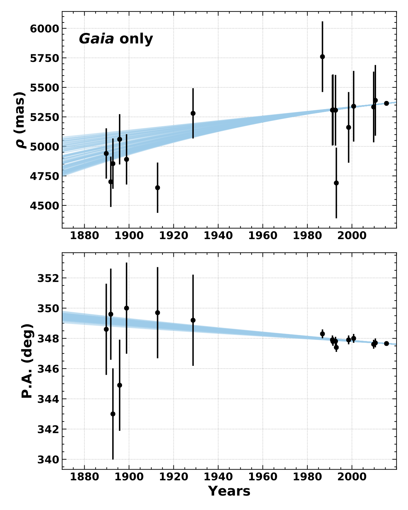

Advisor: Adam Kraus, University of Texas
The monitoring of orbits is one of the oldest tools used to measure the properties and evolution of astrophysical systems. (Mis)alignment of angular momentum vectors between stellar rotation, binary orbits, circumstellar disks, and plantary system orbits all encode information about the dynamical history of the system. Wide stellar binaries can have exceedingly long orbital periods requiring years or decades of astrometric monitoring to constrain orbital motion. Gaia, with its exceptionally precise astrometry and proper motion, offers the promise of studying wide stellar binary orbits with no observational overhead. The question remains as to whether Gaia astrometry is precise enough to provide meaningful constraints on orbital parameters that allow scientific study of binary orbit alignment with other components of the system.
I adapted the Orbits for the Impatient (OFTI; Blunt et al. 2017) to fit Gaia relative separation and proper motion for a selection of wide binaries for which both components are well resolved. I examined the orbital element constraints produced by fitting with Gaia only, and compared it to orbital element constraints from long time baseline astrometric monitoring from the Washington Double Star Catalog. For example, this plot shows orbit fit results for DS Tuc B relative to DS Tuc A using Gaia astrometry (left) and WDS astrometry spanning a 100 year observational period (right). (The WDS astrometry points are overplotted in the Gaia plot for comparison, they were not used in the Gaia fit). The Gaia orbit fit results are significantly better constrained than WDS, and did not require 100 years of orbit monitoring to obtain. The Gaia fit results were used in the Newton et al. 2019 paper reporting the discovery of a transiting planet around DS Tuc A, to show that the binary orbit axis is nearly aligned with the stellar spin and planet orbit axes.
I found that Gaia alone is sufficient for producing reliable orbital element posteriors under some conditions: (1) Both objects have well-defined solutions in Gaia DR2 with RUWE ~ 1.0 and large parallax_over_error values (>~ 10) (2) The orbital period is sufficiently long that no acceleration was observed during the Gaia measurement period (3) The two objects are sufficiently separated that the PSFs do not interfere with one another (4) Niether object is itself an unresolved binary. Future Gaia data releases will further improve orbital constraints by increasing the number of resolved binary systems with well-defined solutions, increasing the number for which both objects have radial velocity measurements, and introducing plane-of-sky acceleration terms.
I developed the open source python package LOFTI to do orbit fitting with Gaia astrometry. Several recent works have made of use of LOFTI and using Gaia for orbit fitting, including Christian et al. 2022, Venner et al. 2021, Vanderburg et al. 2020, and Newton et al. 2019.